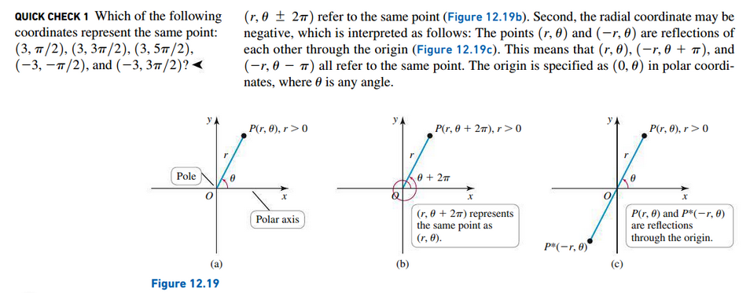
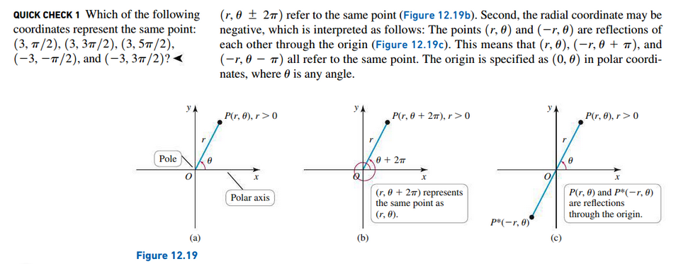
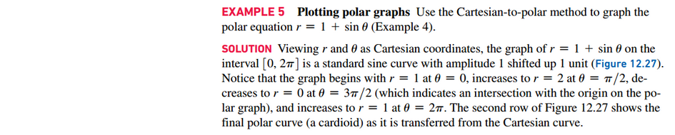
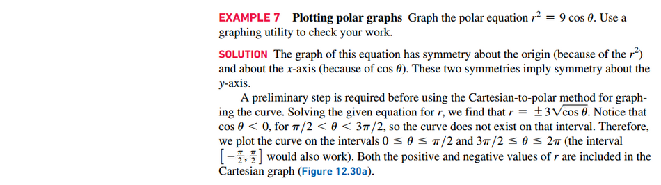

Section 12.2: Polar Coordinates
Defining Polar Coordinates
 


Converting Between Cartesian and Polar Coordinates


Basic Curves in Polar Coordinates


Graphing in Polar Coordinates
 

 
Using Graphing Utilities
Resources
Textbook
- Calculus, Early Transcendentals 3rd Edition - Briggs, Cochran, and Gillet